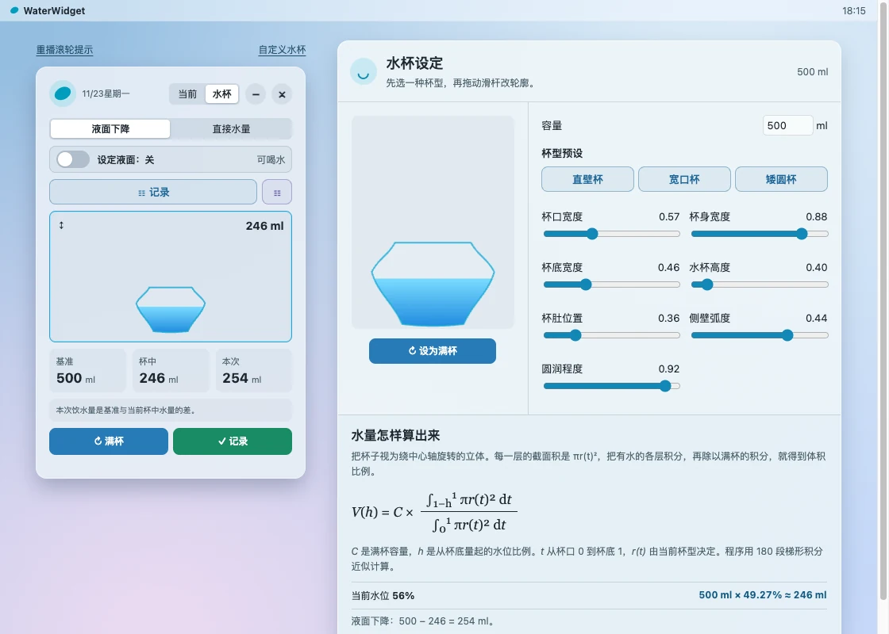

macOS 桌面小组件
WaterWidget.
从杯中的液面读出喝水量，随手记在桌面上。
一个 macOS 桌面饮水记录器。可以用预设水量快速记录，也可以按自己的杯型调节液面，让小组件根据液面的变化换算喝了多少。

喝水小组件
跟随白色圆点试试滚轮，再去右侧编辑杯型。杯形、水位和容量参与同一套积分，计算结果随操作更新。
使用方式
- 顺手记录
- 支持 50、100、250、350 和 500 mL 的常用水量，也能用鼠标滚轮微调单次记录。
- 把自己的杯子设进去
- 设定杯型、容量和轮廓。可以记录两次水位之间减少的体积，也可以直接把当前液面对应的体积记为本次饮水量。
- 放在习惯的位置
- 支持桌面模式、置顶模式和菜单栏入口。每日目标与按日期整理的记录保存在本机。
在 macOS 上可从源码运行，也可用仓库提供的脚本打包成 App。